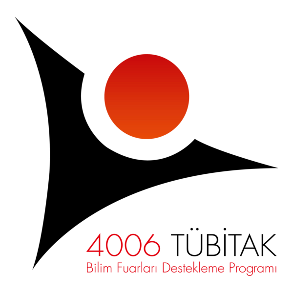
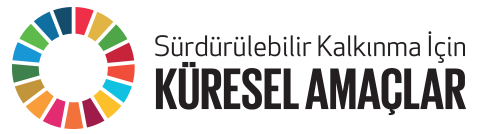
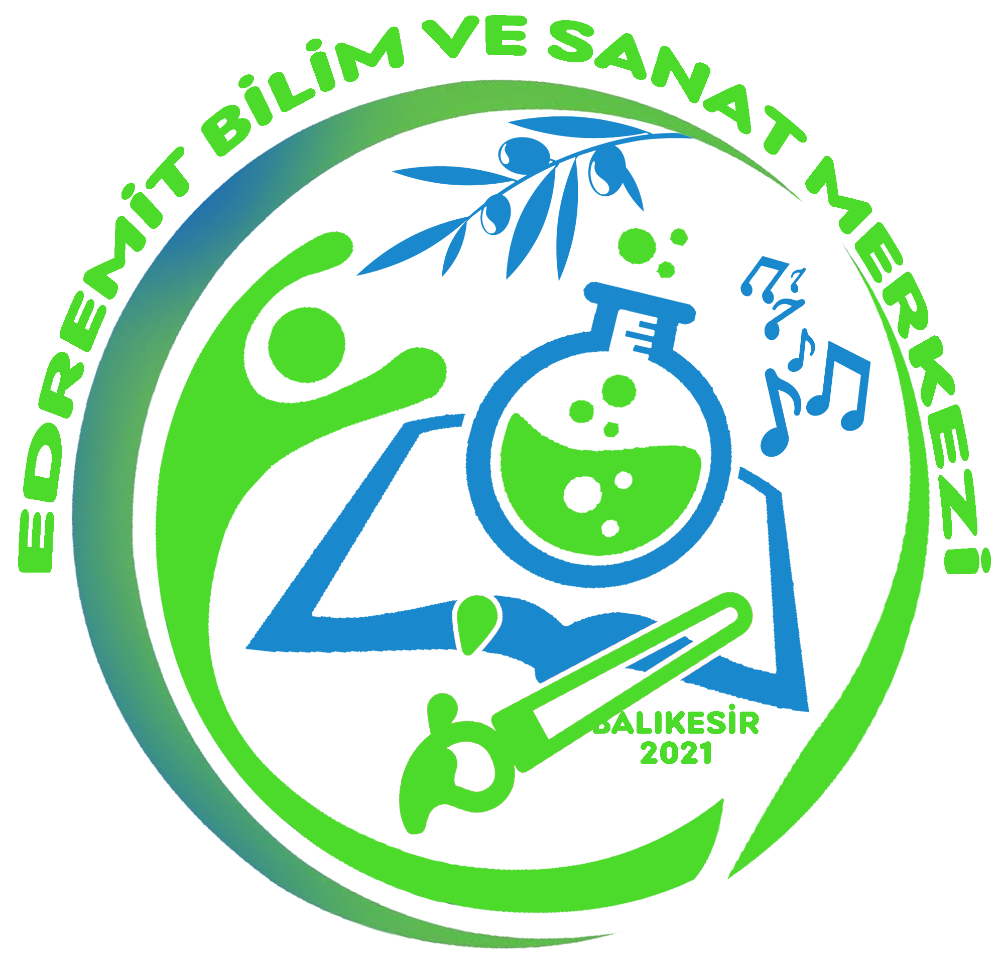
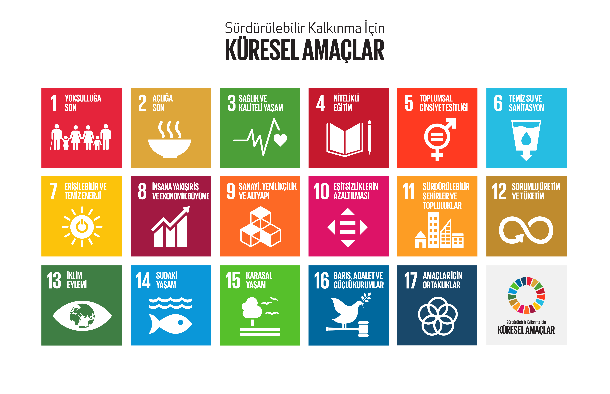

Bu etkileşimli hikaye, 2025-2026 Eğitim Öğretim Yılı Edremit Bilim ve Sanat Merkezi TÜBİTAK 4006 Bilim Fuarı kapsamında hazırlanmıştır. Amacımız, günlük hayatta aldığımız bireysel kararların küresel iklim değişikliği ve yaşadığımız şehirler üzerindeki etkilerini somut bir şekilde göstermektir.
Birleşmiş Milletler Üye Devletleri tarafından 2015 yılında kabul edilen 2030 Gündemi, yoksulluğu ortadan kaldırmak, gezegenimizi korumak ve tüm insanların barış ve refah içinde yaşamasını sağlamak için oluşturulmuş 17 evrensel eylem çağrısıdır.

Hikayemiz boyunca yapacağınız seçimler özellikle SKA 11 (Sürdürülebilir Şehirler) , SKA 12 (Sorumlu Tüketim) ve SKA 13 (İklim Eylemi) etrafında şekillenecektir.
👉 SKA'lar hakkında detaylı bilgi almak için tıklayın.